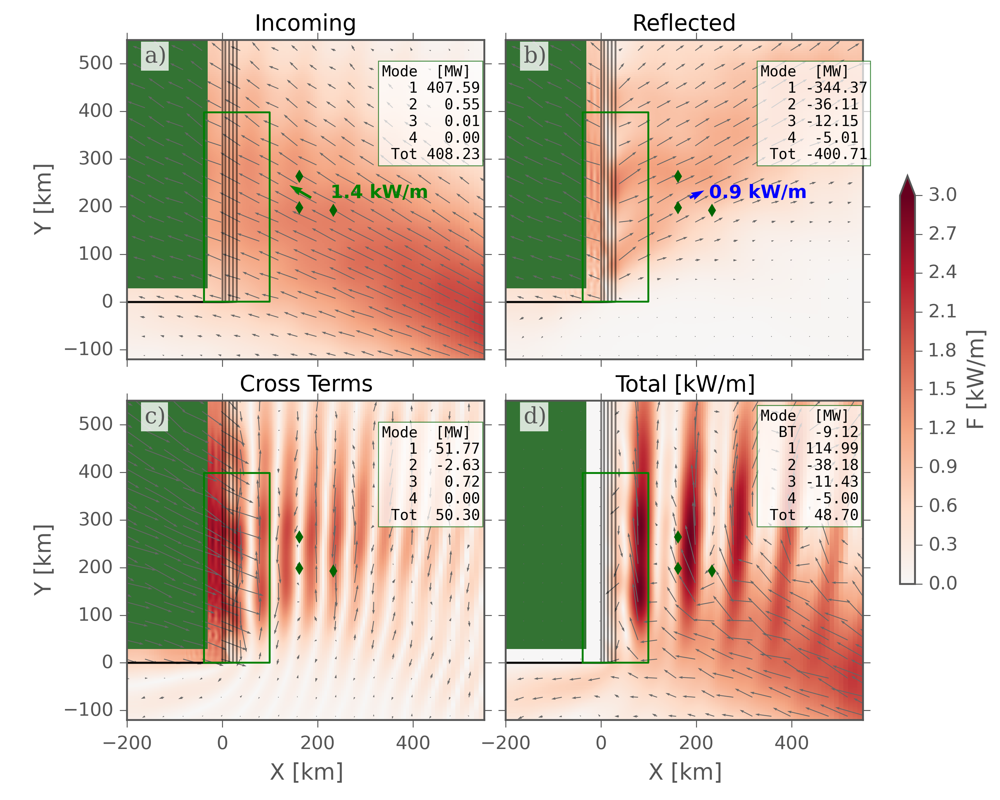

This is the website with the analysis, data, and model setups for our paper "Reflection of linear internal tides from realistic topography: The Tasman continental slope", submitted to J. Phys. Ocean., 15 Mar 2016. (yes the name for this directory was optimistic). Note that the paper is not in an accepted form, and the analysis and data may change.
Note that you can see this page on github, but some of the links don't necessarily work. Visit http://web.uvic.ca/~jklymak/ttide15/ for the fully functional page.
The analysis was carried out using python from the Anaconda distribution. The list of packages in the environment (with version numbers) is ./.pythonenvironment.
Most of the analysis is in a jupyter (python) notebook: ./PaperPlots.ipynb. You can view the results of this notebook here ./PaperPlots.html.
A couple of the figures were done in ./CELTModel.ipynb, ./CELTModel.html
A couple of the figures were done in ./TTideVarStrat.ipynb, ./TTideVarStrat.html
You will need some .py and .m files in order to run these notebooks: ./jmkpython.tgz
The processed model data is largely in ./Tas3d.tgz (6Gb!). This needs to be saved in a directory ./Tas3d in the same directory as the python notebooks.
The data is in a modern *.mat format. These are valid HDF5 files and should be readable by most software packages.
The model setup is in ./Tas3dModel.tgz. WARNING, it will expand to ./Tas3d as well, which you may not want, so put somewhere else. It is built against the MITgcm63o checkpoint.